Södermalm i tid och rum
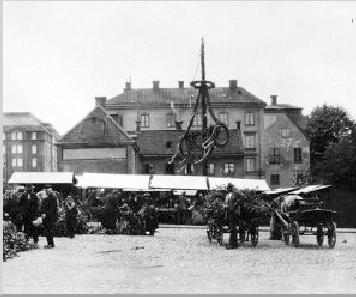
11.
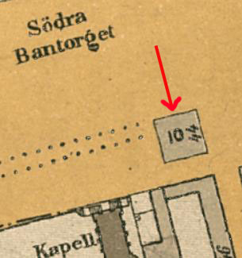
{kind=link}
Tjerneld, Stockholmsliv , del II, 1950
Det var järnvägsepoken som skapade Södra Bantorget liksom den
stora biltrafiken och Södergatan skapade dess efterföljare, Medborgarplatsen. Vad som före 1850 fanns här är ganska snart berättat,
eftersom torget inte var något annat än en utbuktning på Götgatan,
där en del bondskjutsar körde upp och en ganska blygsam torghandel drevs.
Omgivningen var inte heller odelat angenäm, Fatburssjön
var ett stort träsk, där det visserligen gick att skjuta änder på höstarna, men där avfallshögarna trängt undan vatten och grönska. Den
var en fullständig pendang till Stora Träsket vid Roslagstorg.
Som
förut nämnts var det Lillienhoffska huset vid denna tidpunkt fattighus för Katarina församling, där interiörerna skilde sig föga från
dem i liknande inrättningar på andra håll. Möjligen var de underliga
skåpsängar som i formen liknade så kallade amerikanska skrivbord
och som finns avbildade på en teckning av Jenny Nyström i Ny
Illustrerad Tidning 1881 en specialkonstruktion. Maten fick »hjonen» från Dihlströmska inrättningen och den var vanlig »fattistumat». Det gamla diplomatresidenset omgavs efter Götgatan av envåningslängor, medan i sluttningen mot träsket en mindre trädgård
klängde sig fast.
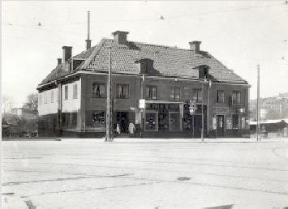
11.
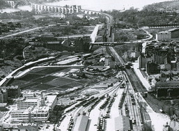
Södra stationsområdet 1930. Vy mot mot väst med Södra bantorget längst fram och Årstabron i bakgrunden.
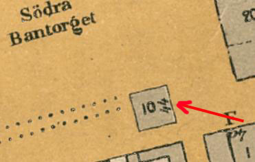
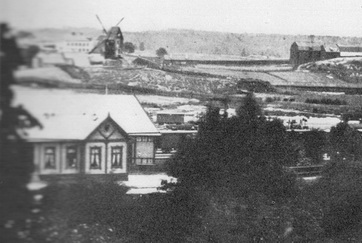
I och för sig var, det naturligtvis en ganska god idé att förvandla den sumpiga fatbursdälden till bangård och ibga protester höjdes från något håll, vilket väl också berodde på att järnvägsbygget motsågs med stor spänning. Någon större stationsanläggning blev dock aldrig uppförd vid Stockholms första järnvägsstation, vilket berodde på, att vid det laget - 1860 - den stora Centralstationen på Norrmalm redan fanns på papperet. Enligt järnvägsbyggaren Nils Ericssons uttryckliga förklaring skulle »en så ringa kostnad som möjligt nedläggas på en station, som måhända framdeles bleve av jämförelsevis mindre vikt». En del av byggnaderna, menade han, borde också kunna flyttas till den planerade storstationen. Stationshuset, som stod färdigt 1860, var också av enkel beskaffenhet; en lång envånings- byggnad av trä med tak av järnplåt. Dock fanns det »smakfulla anordningar, synnerligen i 1:sta och 2:dra klassernas väntsal och stora förstugan». En liten plantering på södra sidan av Bangårdsgatan strax bortom Södergatans viadukt visar nu var stationshuset stod.
Järnvägen föregicks som tidigare nämnts av en lång debatt och även själva driften kom igång successivt. I december 1860 öppnades lokaltrafiken mellan Stockholm och Södertälje, men två år senare, i november 1862 kunde invigningståget från Göteborg till Stockholm ge sig ut på sin festliga färd med kungen och en stor del av riksdagen bland passagerarna. Att resan började i Göteborg tog man inte riktigt väl upp i Stockholm, som enligt uppgift illuminerade sämre än andra orter efter banan, trots att staden brukade visa stora färdigheter i den vägen vid utländska kungabesök. Men det blev i alla fall ett galaspektakel på Operan med en pampig sluttablå där ett lokomotiv skymtade.
|
Nu skulle emellertid trafiken komma igång på allvar och 1863
sattes ett snälltåg in, som startade från Stockholm vid halvsjutiden
på morgonen och som nådde Göteborg efter närmare fjorton timmars färd, uppehållen vid stationerna, som dock inte var längre
än att passagerarna precis hann äta, inbegripna. Snälltåget förde så få
vagnar som möjligt och var främst avsett för affärsmän i brådskande ärenden vilket även framgick av priset: 34 kronor i 1:a klass och 25 kronior i 2:a. Detta var summor som vanligt folk inte kunde tänkas betala. Utom detta tåg avgick från den nya stationen endast två tåg, ett så kallat blandat tåg på förmiddagen till Hallsberg och ett till Sparreholmsenare på dagen. De blandade tågen medförde även 3:e klass.
|
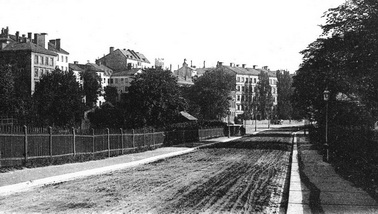 Södra Bangårdsgatan mot öster. Södra Station och Hotell Göteborg finns utanför bilden på höger sida |
{kind=link}
|
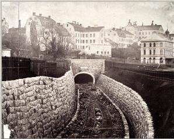 Södra tunneln. Längst till höger Bangårdsgatan 12, Hotell Göteborg. Husen på höjden över tunneln är Högbergsgatan 35-37 |
I närmaste grannskapet av Södra station kom sammanbindningsbanans tunnel att sprängas och ännu i dag ger den en ovanlig och
nästan mystisk prägel åt trakten, allrahelst som ett litet järnvägshus med sin plantering kommit att stå kvar i trekanten mellan den moderna Bangårdsgatan och järnvägens, av sextio års ångdrift nersotade schakt. Att 60-talets människor var intresserade är inte att
undra på. I »En gammal stockholmares minnen» berättar Claes
Lundin, att han vid sin hemkomst 1866 efter tolv år i utlandet fann
hela Stockholm fängslat av det pågående tunnelbygget. Dit ställdes
alla söndagspromenader och man berättade att Söderbergen skakades av 270 sprängskott i dygnet.
Så länge Södra station var den enda i Stockholm blev också Götgatan ett slags infartsväg till staden, precis som den hade varit innan järnvägar och ångbåtar funnits. Här fick gästande utlänningar åka - bland andra prinsen av Wales - liksom hemvändande svenskar och det är de senares känslor Claes Lundin tolkar då han i den nyssnämnda skildringen skriver: »Det var nytt för mig att återse den gamla vägen utför de södra backarna, och jag riktigt jublade då hästarna tycktes stå på huvudet utför Götgatsbacken, vilken blivit sänkt, upplyste min följeslagare, men föreföll mig lika brant som någonsin. Kälke fick man dock icke åka utför backen, men slädfarten var lika god som kälkbacksåkningen.» |
|
Till minnena av denna Stockholms första järnvägsanläggning hör
också det kantstötta, men ändå vackra hus, som fortfarande står i
hörnet av Banbrinken och Bangårdsgatan. Det var järnvägsstationens hotell och eftersom den nya förbindelsen med västra Sverige
ansågs viktigast döptes det till »Hotell Göteborg». Här låg också under 60-talet en järnvägskällare som genast blev ganska mycket uppskattad och dit rika Söderborgare gärna tog sin tillflykt. Att »titta
på tåget» var ett nöje i småstaden Stockholm som i alla andra småstäder.
Men redan 1871 stängdes hotellet och till huset flyttade en internatskola. för, vad man nu skulle kalla »missanpassade» pojkar, ledd av Johan O. Lindgren och vida bekant på Söder under namnet »Trasskolan». Staden stödde inrättningen, som utan tvivel tillkommit av ideella skäl, men där regementet av allt att döma var mycket hårt. Vilket inte hindrade att en hel del av de ungefär trehundra pojkar som under åren togs in i »Trasskolan» återgick till den brottsliga verksamhet de tidigare ägnat sig åt. |
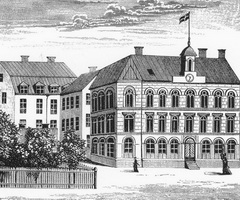 Hotell Göteborg på 1870-talet |
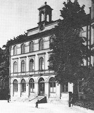 "Trasskolan" år 1900 |
{kind=link}
{kind=link}
|
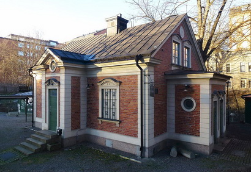
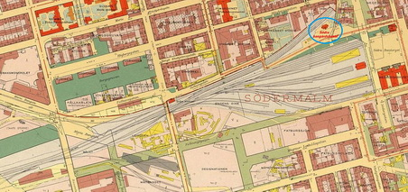 |
Södra Bangårdshuset, Wikipedia
Södra bangårdshuset (även kallat Tegelhuset) är en byggnad på Södra stationsområdet på Södermalm i Stockholm. Byggnaden är ett tidigare banmästarboställe från 1859 och den enda kvarvarande från den tiden då Södra station var Stockholms enda järnvägsstation. Enligt Stockholms stadsmuseum representerar Södra bangårdshuset ett stort kulturhistoriskt värde motsvarande byggnadsminne.
Det så kallade "Tegelhuset" uppfördes 1859 efter SJ:s standardritningar i nyantik stil. Vid den tiden var Adolf W. Edelsvärd chefsarkitekt vid Statens Järnvägars arkitektkontor och han stod för en lång rad standardritningar, troligtvis även för denna byggnad. Den inrymde ursprungligen tre lägenheter om två rum och kök, med separata entréer och förstugor. Södra bangårdshuset är idag den enda bevarade byggnaden från tiden då Södra station var Stockholms enda järnvägsstation innan Stockholms norra station invigdes 1866. Banmästarbostället fungerade som tjänstebostad till anställda vid järnvägen.
Den lilla tegelbyggnaden på 136 m² står strax söder om gamla tunnelmynningen till Södertunneln och får enligt gällande detaljplan inte rivas. Fasaderna är uppförda i rött tegel med listverk och rusticerande hörnkedjor i puts. Entrén markeras av en mindre frontespis med oculus. Fönstren är spröjsade och sadeltaket är täckt med plåt. Huset är idag omsorgsfullt renoverat och har blivit blåmärkt av Stockholms stadsmuseum vilket är den högsta klassningen som innebär att bebyggelsens kulturhistoriska värde motsvarar fordringarna för byggnadsminnen i Kulturmiljölagen.
När Stockholms stad förvärvade Södra stationsområdet av SJ år 1979 avsattes delen med banmästarbostället som park tillhörande intilliggande Fatbursparken. Byggnaden skulle användas som serveringsställe för parkens besökare. Huset var då i stort renoveringsbehov och hyrdes ut i befintligt skick från och med 1989. Därefter lät hyresgästen/krögaren genomföra en omfattande renovering, som tog några år att fullborda. En av Stockholms stad utlovat försäljning av "Tegelhuset" till krögaren beslutades efter en del turer år 2007. Försäljningen genomfördes dock aldrig, då den förutsatte en detaljplaneändring, som dock aldrig gjordes. Den nuvarande hyresgästen (september 2015) har ett hyresavtal som gäller fram till 2028. Gamla Södra bangårdshuset var tidigare en sommarservering under namnet "Restaurang Tegelhuset" med plats för ett 70-tal matgäster inomhus, men som vanligtvis endast hade öppet utomhus. Serveringen har dock inte haft öppet de senaste åren.
|
{kind=link}
{kind=link}
|
Medborgarplatsen
Torget ligger väster om Götgatan på Södermalm i Stockholm och är ett livligt nöjestorg med många uteserveringar sommartid. Här ligger Medborgarhuset och Göta Arkhuset, som är Södermalms stadsdelsförvaltnings hemvist. Närmast torget vid Götgatan 48 ligger Lillienhoffska palatset från 1600-talet.
Torget gränsar till Södra Stationsområdet med bland annat Bofills båge samt Södermalms saluhall, som öppnade sina portar i september 1992. I byggnaden finns även Filmstaden Söder. På östra sidan Götgatan finns Björns trädgård och Stockholms moské, ombyggd till moské 1999 och invigd sommaren 2000.
Medborgarplatsens tillkomst berodde på järnvägens framdragande och anläggningen av Södra station i slutet av 1850-talet. Då planerades och utlades ett torg, där man skulle saluföra med järnvägen ankommande lantmannaprodukter. Det fick 1876 namnet Södra Bantorget, namnmässigt en pendang till Norra Bantorget på Norrmalm. På platsen för Södra Bantorget fanns tidigare sjön Fatburen.
|
 Tunnelbanan mellan Slussen och Skanstull är under byggnad på foto- grafiet, men Medborgar- platsens tunnelbanestation öppnades inte förrän 1 oktober 1950. Innan dess, från 1933, var det en station för spårvagnar. |
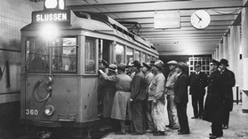 Spårvagnen var T-banetågens föregångare. 1933
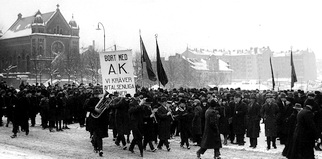 |
{kind=link}
{kind=link}
|
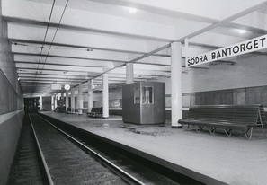 Den nyinvigda stationen "Södra Bantorget". |
I samband med att man uppförde Medborgarhuset byggde man om torget, och 1936 föreslogs även en namnändring på torget till Medborgarplatsen. Sedan 17 december 1940 bär torget sitt nuvarande namn, och blev därmed det enda torget i Stockholm som har ordet plats i namnet. Norra Bantorget behöll dock sitt namn.
Medborgarplatsen och Skanstull är de äldsta underjordiska stationerna i tunnelbanenätet. Båda stationer öppnades 1 oktober 1933, denna under namnet Södra Bantorget. Södertunneln för den nya banan hade byggts i öppet schakt under torget och Götgatan. Själva banan SlussenSkansbron kallades redan då Tunnelbanan. Den trafikerades då av spårvagnar som utgjorde den första tunnelbanan mellan Slussen och Ringvägen. Namnbyte till Medborgarplatsen skedde år 1944. |
År 1950 byggdes stationen om och förlängdes i den norra änden för de nya tunnelbanetågen. Arkitekter var Holger Blom och Gunnar Lené. Den blev inte klar till den 1 oktober då trafiken med de nya tågen började utan öppnades den 1 november i sitt nya skick. Man kan fortfarande se fästena för spårvägens kontaktledningar i taket över spåren. Stationen trafikeras av T-bana 1 (gröna linjen) och ligger mellan stationerna Slussen och Skanstull. Avståndet från Slussen är 600 meter. Stationen ligger under Götgatan från Folkungagatan till Noe Arksgränden invid Björns trädgård. Plattformen ligger 618 meter under marken (men 17 meter över havet. Medianen är 16,8 meter för hela t-banan) och har entréer från Folkungagatan 45 eller Björns trädgård. Den senare ingången öppnades den 29 november 1995. |
{kind=link}